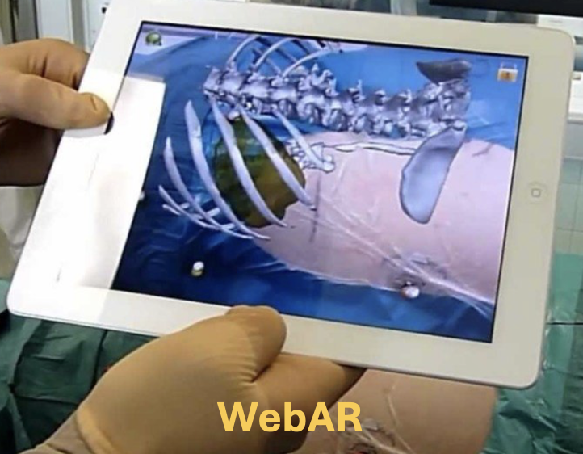
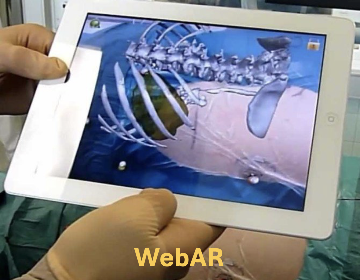

Clustered Regularly Interspaced Short Palindromic Repeats (CRISPR), first used in 2016, is a technology that performs as scissors that edit the human genome and cut a targeted DNA sequence (see Fig. 3). It is used to replace mutation genes with unaffected DNA. CRISPR replaces the cut portion of DNA with synthetic RNA (gRNA) (see Fig. 1). It is used to handle mutations in DNA; however, it is a controversial technology as in the past, there have been unwanted changes made in human embryos (see Fig. 2). It has been stated that CRISPR is able to make new mutations and is an unethical process. The side effects and possibilities of CRISPR remain unknown as it has not been tested frequently.
Fig. 1. Lukas Kummer, n.d.Fig. 1. The Francis Crick Institute, 2017Fig. 1. buy sites, n.d.
Examples of Technologies used for Treating Disease


 
